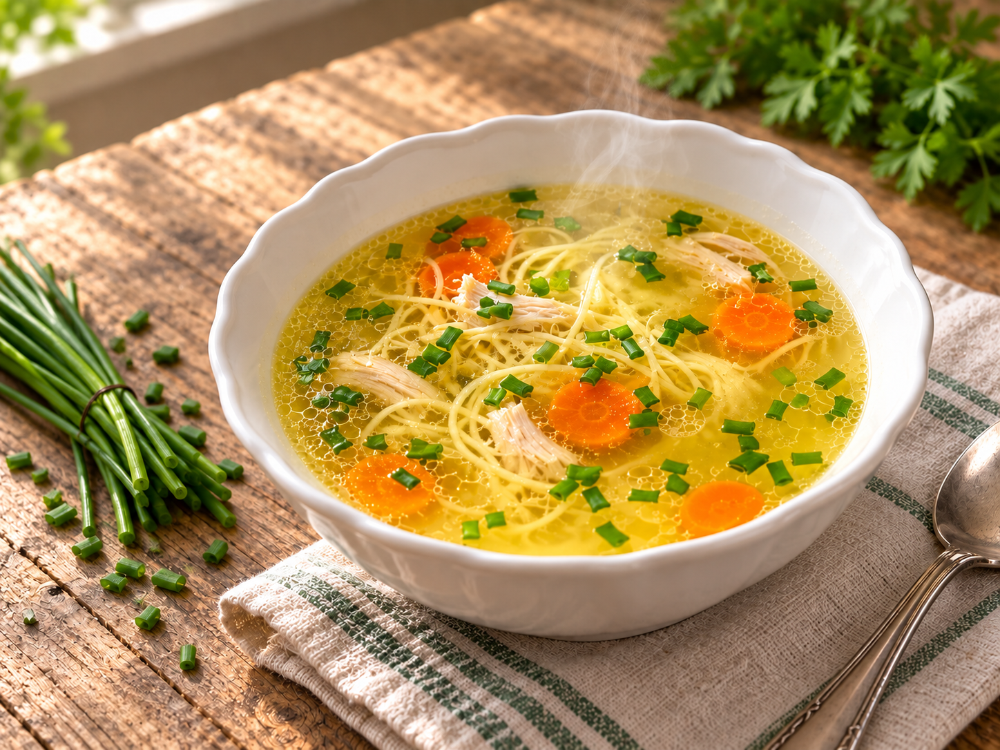

Unsere Klassiker
Hühnersuppe

Eine kräftige, klare Hühnersuppe, die ganz langsam vor sich hin siedet. Brühe, Suppennudeln und gezupftes Hühnerfleisch kommen getrennt auf den Tisch – so kann sich jeder seine Lieblingsportion zusammenstellen.
Zutaten
1Suppenhuhn
1 BundSuppengrün
2 StangenSellerie
½ KnolleIngwer, etwa handflächengroß
1Zwiebel
2 ZehenKnoblauch
EtwasNeutrales Speiseöl
Nach BedarfWasser
Gewürze
1Sternanis
15Pfefferkörner
15Fenchelsamen
25Koriandersamen
5Wacholderbeeren
3Lorbeerblätter
OptionalLiebstöckel
Nach GeschmackSalz und Pfeffer
Suppeneinlage
1Karotte
150 gSuppennudeln
Nach BedarfFrühlingslauch, nur der grüne Teil
Nach BedarfPetersilie
Zubereitung
- Das Suppengrün waschen und in etwa 2–3 cm große Stücke schneiden. Ingwer und Zwiebel halbieren, die Schnittflächen mit wenigen Tropfen neutralem Speiseöl bepinseln und in einer heißen Pfanne dunkelbraun rösten.
- Kurz vor Ende Sternanis, Pfefferkörner, Fenchelsamen, Koriandersamen und Wacholderbeeren dazugeben und 1–2 Minuten mitrösten. Den Herd ausschalten.
- Suppengrün, Sellerie, Ingwer, Zwiebel, geröstete Gewürze, Lorbeerblätter und nach Wunsch Liebstöckel zusammen mit dem Suppenhuhn in einen großen Topf geben. Den Knoblauch mit der flachen Messerseite andrücken und hinzufügen. Mit so viel Wasser auffüllen, dass alles gerade bedeckt ist.
- Alles einmal aufkochen, dann sofort auf die niedrigste Stufe zurückschalten. Die Suppe mindestens 3 Stunden ganz sanft sieden lassen. Sie soll dabei nie kräftig oder wallend kochen.
- Das gare Huhn aus der Brühe nehmen und kurz abkühlen lassen. Brust, Keulen und Flügel lösen, das Fleisch in mundgerechte Stücke zupfen und separat warm halten. Haut, Knorpel und Knochen entsorgen.
- Die Brühe durch ein feines Sieb in einen sauberen Topf gießen. Die Karotte in dünne Scheiben oder kleine Würfel schneiden und in der Brühe gar ziehen lassen. Anschließend die Brühe mit Salz und Pfeffer abschmecken.
- Die Suppennudeln separat nach Packungsangabe garen und abgießen. Frühlingslauch in feine Ringe schneiden und die Petersilie hacken.
- Brühe, Suppennudeln und gezupftes Hühnerfleisch getrennt auf den Tisch stellen. Jeder gibt sich die gewünschte Menge in seine Schale, gießt heiße Brühe darüber und verfeinert die Suppe mit Frühlingslauch und Petersilie.
Tipp
Brühe, Fleisch und Nudeln vollständig abkühlen lassen und getrennt aufbewahren oder einfrieren. Dadurch bleiben die Nudeln bissfest und jeder Bestandteil lässt sich später genau in der benötigten Menge auftauen.